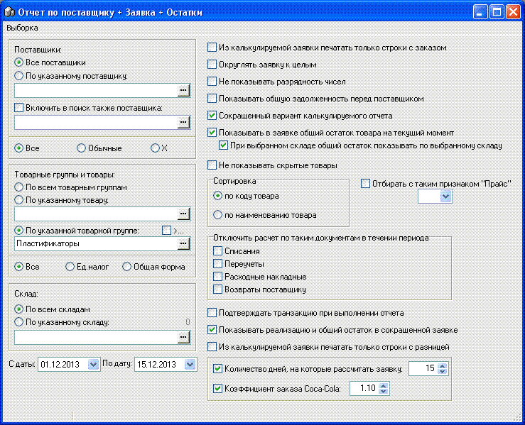
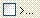
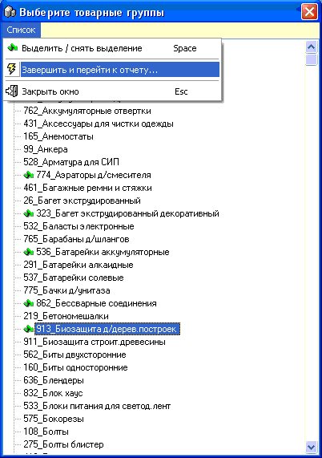

Ниже, на рисунке, показана форма отчета "Отчет по
поставщику+Заявка+Остатки", рассмотрим критерии и опции отчета-заявки
подробнее:

Поставщики - на данной панели можно выбрать отбор
данных о остатках как по всем поставщикам, так и по выбранному поставщику, или
по двум поставщикам (часто поставщик поставляет товар по документам именно от
двух фирм - юр.лицо и ЧП, но заявку удобно делать по единому
ассортименту).
Товары и товарные группы - есть 4 варианта
выбора:
1. По всем товарным группам. Можно
выбирать, если выбран определенный поставщик/2 поставщика.
2. По указанному товару.
3. По указанной товарной группе.
Укажите группу, нажав на кнопочку с троеточием в конце данного
окошка.
4. Если установить флажек  а затем нажать на кнопочку с троеточием, то будет открыта
форма выбора нескольких товарных групп (выделение/снятие пометки с нужных
групп осуществляется клавишей пробел, затем нажмите пункт "Завершить и перейти
к отчету...", в окошке наименования товарной группы появится надпись"Выбранные
товарные группы..."):

Склад - выберите либо формирование по всем
складам, либо по указаному складу.
Опции:
Из калькулируемой заявки печатать только строки с
заказом - если установлено, то после изменения столбца "Заказ" в
калькулируемой заявке и закрытия формы редактирования, откроется
предварительный просмотр печати только позиций, на которых было проставлено
заказываемое количество >0.
Округлять заявку к целым - если мы формируем
отчет, например, по товарным группам, содержащим штучный товар, то установите
флажек и рассчитанная компьютером заказываемое количество автоматически
округлится к целому числу.
Не показывать разрядность чисел - если
установлен, то в отчете 3.200 будет отображаться как просто 3.2.
Показывать общую задолженность перед поставщиком
- если флажек установлен и выбран конкретный поставщик, то в конце отчета,
после сумм товарных остатков, будет выведено дебет/кредит/сальдо
взаиморасчетов по данному поставщику; если же выбраны все поставщики, то
данные цифры будут выводится по всем контрагентам (что неинформативно, поэтому
устанавливайте данную опцию только если выбираете определенного
поставщика).
Сокращенный вариант калькулируемого отчета - если
установлен флажек, то заявка отображается в редактируемой таблице и выводится
на печать с сокращенным до минимума количеством столбцов. Используйте на
свое усмотрение какой вариант вам больше подходит.
Показывать в заявке товара общий остаток товара
на текущий момент - т.к. товар может поступать от различных поставщиков, а
выбран определенный поставщик, установленный флажек выводит еще одним
последним столбцом общее количество данного товара (из партионных остатков,
красным цветом). Сравнивая два этих остатка, оператор принимает решение о
целесообразности заказа товара.
При выбранном складе общий остаток
показывать по выбранному складу - работает, если установлен предыдущий флажек,
связанная опция. При установке опции подсчитывает и выводит общее количество
по всем поставщикам, но с учетом выбранного склада, что может привести к
неотображению полного остатка товара, если он есть на других
складах.
Не показывать скрытые товары - если установлен
флажек, то в отчет не включаются товары, которые помечены в карточке товара
как скрытые.
Сортировка по - выберите нужный вам тип
сортировки списка товаров при формировании отчета - по коду товара или по
наименованию.
Отбирать с таким признаком "Прайс" - доступно 3
варианта (не выбрано значение, Да, Нет), отбирает в отчет только те
товары, у которых в карточке товара установлено соответствующее значение
одноименного признака.
Отключить расчет по таким документа в течении
периода - (перечень типов документов) - установка приводит к искаженному
результату. Используйте, если понимаете зачем это делаете.
Подтверждать транзакцию при выполнении отчета.
Служебная опция. Используйте, если понимаете зачем это делаете. На больших
базах данных может приводить к небольшому ускорению повторного отбора
отчета.
Показывать реализацию и общий остаток в
сокращенной заявке - если выбран сокращенный вариант калькулируемого отчета
(см.опцию выше) и если данный флажек не установлен, то сокращенная заявка
становится иеще сокращенней - в ней будет отображаться только столбец с
заказом. Используйте на свое усмотрение какой вариант вам больше
подходит.
Из калькулируемой заявки печатать только строки с
разницей - если установлено, то после закрытия формы редактирования, откроется
предварительный просмотр печати заявки и на него будет наложен фильтр -
отобразятся только строки у которых расчетный остаток товара на
конец периода <> суммарному партионному остатку.
Количество дней на которые рассчитать заявку -
укажите требуемое количество дней. Если флажек не установлен, то
рассчитывается на аналогичный по длительности период за который отбираются
данные.
Коэффициент заказа Coca-Cola - если флажек
установлен, то расчет заявки ведется по специальной формуле придуманной
торговыми представителями компании Coca-Cola, исходя из рассчитанного остатка
товара, его реализации, и поправочного коэффициента учитывающего рост продаж.
Можете поэкспериментировать с подбором коэффициента, но обычно его значение
находится в диапазоне 1,05...1,35.